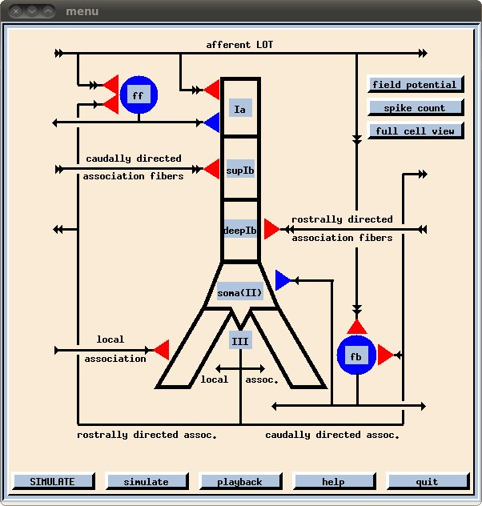

The Wilson and Bower 1992 piriform cortex model is distributed with GENESIS: http://genesis-sim.org/project/genesis It is located in the following directory: ./genesis-2.3/genesis/Scripts/piriform and can be started with the command: genesis Piriform.g The below window should appear:  To use the simulator, press the simulate button. After a brief while the simulation will end (see genesis prompt). Then select desired displays with the interface, and click the capital Simulate button to switch to playback mode. Click playback and the display windows will be refreshed. More information is also available in the GENESIS book.